이번 강좌에서는 다중 프로세스(스레드) 환경에서 발생하는 동시성 문제(Concurrency Issue)와 이를 해결하기 위한 상호배제(Mutual Exclusion) 메커니즘을 심도 있게 다룹니다. 임계 영역(Critical Section)의 개념부터, 하드웨어 수준의 원자적(Atomic) 명령어, 그리고 OS 레벨의 동기화 객체인 세마포어(Semaphore)와 모니터(Monitor)의 아키텍처를 분석합니다.
[!NOTE] 동기화(Synchronization)는 현대 운영체제와 멀티스레드 프로그래밍에서 데이터 무결성을 보장하기 위한 가장 핵심적인 기술입니다. 단순히 락(Lock)을 거는 행위를 넘어, 데드락(Deadlock)을 방지하고 병렬 처리 능력을 극대화하는 설계가 요구됩니다.
TestAndSet 및 CompareAndSwap(CAS) 연산의 원자성(Atomicity)을 이해한다.다중 프로그래밍 환경에서 여러 프로세스가 공유 자원(메모리, 데이터베이스, 파일 등)에 동시에 접근할 때, 타이밍이나 스케줄링 순서에 따라 결과가 달라지는 경쟁 상태(Race Condition)가 발생할 수 있습니다.
이를 해결하기 위해서는 공유 자원에 대한 상호 배타적(Mutually Exclusive) 접근을 보장해야 합니다.
동시성 문제가 가장 흔하게 발생하는 대표적인 아키텍처 스트림 패턴입니다. 정보가 비동기적으로 생산 및 소비되는 과정에서 한정된 버퍼(Shared Memory)를 관리해야 합니다.
경쟁 상태를 방지하기 위해 공유 자원에 접근하는 코드 조각을 임계 영역(Critical Section)으로 정의합니다. 한 프로세스가 임계 영역에서 코드를 실행 중일 때는, 다른 어떤 프로세스도 해당 임계 영역에 진입할 수 없어야 합니다.
임계 영역을 바탕으로 상호배제가 이루어지는 개념적, 시간적 관계는 다음과 같습니다.
완벽한 임계 영역 규약(Protocol)을 구현하기 위해서는 다음 3가지 요구조건을 모두 충족해야 합니다.
소프트웨어적인 알고리즘(Dekker, Peterson)만으로는 복잡도와 오버헤드가 크기 때문에, 현대 시스템은 하드웨어 차원에서 메모리에 대한 원자적(Atomic) 연산을 제공합니다. 대표적인 것이 TestAndSet (TSL) 명령어입니다.
while(TestAndSet(&lock)) 루프를 돌며 무한정 CPU 사이클을 낭비하는 스핀락(Spinlock) 현상이 발생합니다. 이는 Multi-Core 환경의 짧은 대기에는 적합할 수 있지만, 단일 코어나 긴 작업 대기에는 시스템 성능 저하를 유발합니다.바쁜 대기(Busy Waiting)로 인한 CPU 자원 낭비를 막기 위해, 큐(Queue)를 활용하여 프로세스를 대기(Block) 상태로 전환하는 고급 추상화 객체들이 도입되었습니다.
에츠허르 다익스트라(Dijkstra)가 고안한 도구로, 정수형 변수와 이 변수에 접근하는 두 가지 원자적 연산 wait() (P 연산)와 signal() (V 연산)로 구성됩니다.
wait(): 가능한 자원의 수(정수값)를 감소시킵니다. 값이 음수가 되면 해당 프로세스는 대기 큐(Wait Queue)로 이동하여 블록(Block)됩니다.signal(): 자원을 반납하고 카운트를 증가시킵니다. 대기 큐에 프로세스가 있다면 하나를 깨워(Wakeup) 준비 큐로 보냅니다.
세마포어의 제어 오류(예: wait/signal 누락이나 순서 오류, 데드락)를 방지하기 위해, 프로그래밍 언어 자체가 제공하는 고급 동기화 추상화 구조입니다. (예: Java의 synchronized 키워드)
TestAndSet과 같은 하드웨어 명령어를 이용해 원자적 조작을 지원하지만, 바쁜 대기(Busy Waiting / Spinlock) 구조의 태생적 단점이 존재합니다.